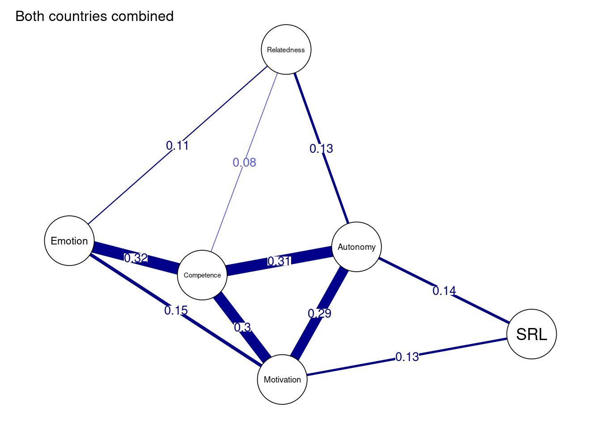
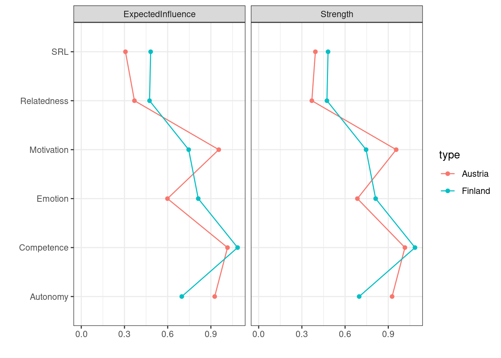
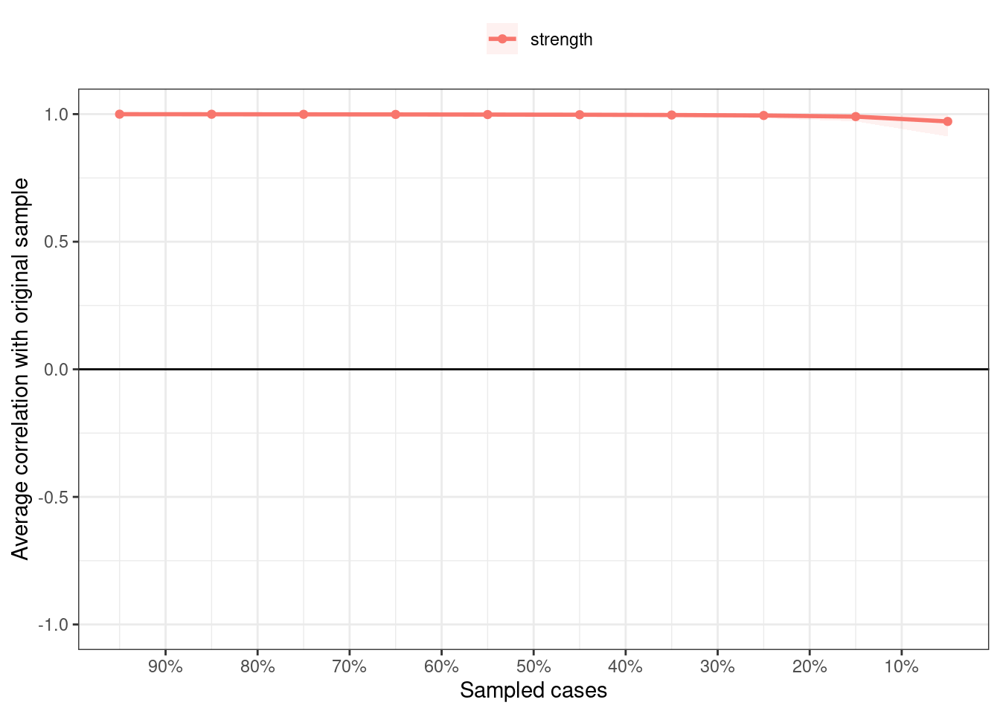

library(rio)
library(tidyverse)
library(bootnet)
library(networktools)
library(NetworkToolbox)
library(NetworkComparisonTest)
library(qgraph)
library(mgm)
library(matrixcalc)19 Psychological Networks: A Modern Approach to Analysis of Learning and Complex Learning Processes
Abstract
In the examination of psychological phenomena within educational environments, a multitude of variables come into play, and these variables have the potential to interact with, trigger, and exert influence on one another. To grasp the intricate dependencies among these variables, investigating the linear associations between each variable pair is not enough. Instead, this complexity demands the application of more advanced techniques that capture the full spectrum of interactions between these variables. One of such techniques is psychological networks. In contrast to social networks, where nodes typically represent individuals and edges signify their interactions or relationships, psychological networks differ in that the nodes represent observed psychological variables, and the edges denote the statistical relationships between them. This chapter serves as an introduction to psychological networks within educational research, offering a tutorial on their estimation, visualization, and interpretation using the R programming language.
1 Introduction
Learning has long been described as a complex system that involves the interactions of several elements across time, persons and contexts [1–3]. Such descriptions include learning theories, constructs, classroom, learners, education as a whole and educational policies. For instance, Zimmerman describes self-regulation as a “complex system of interdependent processes” [4]. Winne describes the SRL process as “complex, dynamically changeable and contextually sensitive” [5]. Similar descriptions and operationalizations exist for engagement [6], motivation [7, 8], metacognition [9], agency [10] and achievement goals [11], to mention a few. Similarly, the students [12], the classroom [13], collaborative groups [14] have all been conceptualized from the perspective of complex systems. Nevertheless, despite the long history and the solid theoretical grounds, methodological approaches that capture the complexities of learning and learners have been lagging behind both in adoption or applications [1, 15]. This chapter introduces the complex systems and offers tutorial on one of the most important and promising methods of analyzing complex systems with a real-life dataset.
1.1 Complex systems
A complex system is an ensemble of interdependent elements that interact with one another, evolve, adapt or self-organize in a nonlinear way leading to the emergence of new phenomenon or behavior [16, 17]. Let’s for example take engagement as an example. Engagement is understood as a multidimensional construct with three dimensions: behavioral, cognitive and emotional dimensions [18, 19]. Research has shown that each of the engagement dimensions influence (or interact with) each other; for example, enjoying school (emotions) stimulates school attendance (behavior) and investment in learning (cognitive) [18, 20]. Such interactions may lead to the emergence of resilience (new behavior) [21]. We also know that such interactions are nonlinear —that is, we can not combine engagement dimensions together in a single score (e.g., behavioral + cognitive + emotional ≠ engagement). In other words, the sum of the parts does not equal the whole. The same can be said about self-regulated learning, the Zimmerman cyclical phases model describes three phases: forethought (task analysis and goal-setting), performance phase (task enactment and strategies) and self-reflection (evaluation and adaptation). Each of these phases are explicitly modeled as influencing each other in a cyclical way; they interact in a non-linear way and such interactions lead to the emergence of learning strategies [22].
The study of these complexities of learning requires methods that account for such interactions, interdependencies and heterogeneity [1, 15]. Linear methods such as correlations, regression or comparison of means are essentially reductionist, that is, disregard the inter-relationships between the variables. For instance, in regression analysis, all variables are included as predictors of one predicted variable (dependable variable). By design, such variables are assumed to be independent and not correlated. While this view can offer understanding through simplification, it does so by compromising the understanding of the big picture. In contrast to the reductionist view of human behavior, embracing the view that learning is complex is more tethered to reality and promises for renewal of our knowledge [1, 15, 23].
1.2 Network analysis
Network analysis as a framework affords researchers a powerful tool set to chart relations, map connections, and discover clusters or communities between interacting components and therefore, has become one of the most important methods for understanding complex systems [24, 25]. In education, social network analysis has been used for decades [25], and we covered it in detail in previous chapters of the book [[26]; [27]; [28]}. Yet, to go beyond social interactions, one needs a different type of networks: probabilistic networks [29, 30]. In probabilistic networks, the variables (often indicators of constructs or scale scores) are the nodes or the vertices of the networks, the relationships or magnitude of interactions (i.e. probabilistic associations) between such variables form the edges. In particular, we will focus in this chapter on psychological networks: Gaussian graphical models (GGM) [30]. In psychological networks, the variables may be constructs, behaviors, attitudes, etc., and the interactions are partial correlations among the nodes [3]. A partial correlation measures the relationship (or the conditions dependence) between two variables after removing (controlling or adjusting) for all other variables in the network or what is known as ceteris paribus [30, 31]. For instance, if we are modeling a network where motivation, achievement, engagement, self-regulation and well-being are nodes, and we observed a relationship between well-being and achievement, such relationships means that well-being is associated with achievement beyond what can be explained by their associations with motivation, engagement, self-regulation (all other variables in the network). The absence of a relationship between two variables signifies a conditional independence between the two variables after controlling for all other variables in the network [31]. As such, the presence or lack of interactions are both interpretable and carry a meaning. Psychological networks offer rigorous methods for the assessment of the accuracy of estimated networks, edge weights and centrality measures through bootstrapping, assessment of sampling variability through simulation of “expected replicability” of the studied networks) [29].
3 Tutorial with R
In this section, we present a step-by-step tutorial on how to use psychological networks in cross-sectional survey data. The dataset that we are using contains the results of 6,071 students’ responses to a survey investigating students’ psychological characteristics related to their well-being during the COVID-19 pandemic in Finland and Austria. The survey questions cover students’ basic psychological needs (relatedness, autonomy, and experienced competence), self-regulated learning, positive emotion and intrinsic learning motivation. Moreover, the dataset contains demographic variables, such as country, gender, and age and is well described in the dataset chapter [40]. In the tutorial, we will construct and visualize a network that represents the relationship between the different psychological characteristics, we will interpret and evaluate these relationships, and we will compare how the networks differ among demographic groups.
3.1 The libraries
We start by importing the necessary packages We know rio [41] and tidyverse [42] from previous chapters for importing and manipulating data respectively. The bootnet [43] package provides methods to estimate and assess accuracy and stability of estimated network structures and centrality indices. The package networktools [44] includes a selection of tools for network analysis and plotting. NetworkToolbox [45] implements network analysis and graph theory measures used in neuroscience, cognitive science, and psychology. NetworkComparisonTest [46] allows to assess the difference between two networks based on several invariance measures. The package qgraph [47] offers network visualization and analysis, as well as Gaussian graphical model computation. The package mgm [48] provides estimation of k-Order time-varying Mixed Graphical Models and mixed VAR(p) models via elastic-net regularized neighborhood regression. Lastly, matrixcalc [49] offers a collection of functions to support matrix calculations for probability, econometric and numerical analysis.
3.2 Importing and preparing the data
The first step is importing the data and doing the ncessary preparation, that is, removing the missing and incomplete responses.
df <-
import("https://github.com/sonsoleslp/labook-data/raw/main/11_universityCovid/data.sav") |>
drop_na()To represent each of the constructs that the survey aimed at capturing, we combine all the columns representing items from the same construct into one by averaging the responses. The next code calculates the mean for each construct by averaging all the related items:
aggregated <- df |> rowwise() |> mutate(
Competence = rowMeans(cbind(comp1.rec , comp2.rec, comp3.rec), na.rm = T),
Autonomy = rowMeans(cbind(auto1.rec , auto2.rec, auto3.rec), na.rm = T),
Motivation = rowMeans(cbind(lm1.rec , lm2.rec, lm3.rec), na.rm = T),
Emotion = rowMeans(cbind(pa1.rec , pa2.rec, pa3.rec), na.rm = T),
Relatedness = rowMeans(cbind(sr1.rec , sr2.rec, sr3.rec), na.rm = T),
SRL = rowMeans(cbind(gp1.rec , gp2.rec, gp3.rec), na.rm = T)) We can now keep only the newly created columns. We also create subsets of the data based on gender (a dataset for males and another for females) and country (a data set for Austria and another for Finland). We will use these datasets later for comparison acorss genders and countries.
cols <- c("Relatedness", "Competence", "Autonomy", "Emotion", "Motivation", "SRL")
filter(aggregated, country == 1) |> select(all_of(cols)) -> finlandData
filter(aggregated, country == 0) |> select(all_of(cols)) -> austriaData
filter(aggregated, gender == 1) |> select(all_of(cols)) -> femaleData
filter(aggregated, gender == 2) |> select(all_of(cols)) -> maleData
select(aggregated, all_of(cols)) -> allData The allData dataframe should look as follows:
allData# A tibble: 7,160 × 6
# Rowwise:
Relatedness Competence Autonomy Emotion Motivation SRL
<dbl> <dbl> <dbl> <dbl> <dbl> <dbl>
1 3 2.33 2.33 2 1.33 2.67
2 5 3 1.67 2.33 2 4.33
3 4.67 4 2.67 4 3 4.33
4 4.33 3.33 3 3.33 2.67 2.67
5 5 4 3 4 3 4.33
6 4 2.67 2.67 3.33 2.67 5
7 4.67 4.33 3.33 4.67 4.33 4.67
8 2.33 3.67 2.67 5 1.33 2.67
9 3 3.33 3 3.67 2 4
10 3.67 2.67 2.33 3.33 1 2.67
# ℹ 7,150 more rows3.3 Assumption checks
As a first step of the analysis, we need to check some assumptions to make sure that the dataset and the estimated network are appropriate. First, we need to ensure that the correlation matrix is positive definite i.e., the included variables are not a linear combination of each other and therefore, so similar they do not offer new information. This is performed by using the function is.positive.definite() from the package matrixcalc. Please note that in cases where the correlation matrix is non-positive definite, we can use option cor_auto to search for possible positive definite matrices (see later). In our case, the matrix is already positive definite. Note that we also set the use argument to "pairwise.complete.obs", or pairwise complete observations to include maximal observations.
correlationMatrix <- cor(x = allData, use = c("pairwise.complete.obs"))
is.positive.definite(correlationMatrix)[1] TRUEThe second assumption that we need to check is whether some variables are highly correlated and therefore redundant. In doing so we make sure that each variable is sufficiently distinct from all other variables and captures a unique construct. The goldbricker algorithm compares the variables’ correlation patterns with all other variables in the dataset. Below, we search for items which are highly inter-correlated using the default values: (r > 0.50) with 0.25 as the significant fraction of variables and p-value of 0.05. The results show that the variables are significantly distinct from each other.
goldbricker(allData, p = 0.05, method = "hittner2003",
threshold = 0.25, corMin = 0.5, progressbar = FALSE) Suggested reductions: Less than 25 % of correlations are significantly
different for the following pairs:
[1] "No suggested reductions"3.4 Network estimation
Given that we made sure that the data satisfy the necessary assumptions, we can now build or estimate the network. The estimation means that we quantify the associations between the different variables. Several types of associations can be estimated. The most common in psychological networks are dependency measures, such as correlation and regression. In these networks, we are interested in how the levels or values of the variables in the network vary together in a similar way (e.g., if and to what extent higher levels of motivation are associated with higher levels of engagement). Such patterns can be estimated using covariance, simple correlation, partial correlation or relative importance (regression). In this tutorial, we focus on the the most commonly used estimation method, which is regularized partial correlation.
Regularized partial correlations have been shown to (1) retrieve the true structure of the network in most situations, and (2) offer an interpretable sparse network that shows conditional association between variables. A partial correlation means that the association between each two variables is above and beyond all other variables in the network, or conditioning on all other variables in the network or holding all other variables constant often referred to as ceteris paribus. This allows us to estimate, for example, the association between motivation and engagement beyond other variables that are included in the network, e.g., achievement, anxiety or enjoyment. Regularization is the process of applying an extra penalty for the complexity of network model. A growing body of research recommends the procedure for several reasons. Regularization helps eliminate spurious edges that results from influence of other nodes, and shrinks trivial edges to zero and thus help eliminates Type 1 error or “false positive” edges. In doing so, the resulting network model is less complex, sparser, simpler to interpret with only the strong meaningful correlations. In doing so, regularization helps retrieve a true —and conservative— structure of the network. The penalty is commonly applied using the least absolute shrinkage and selection operator “LASSO”.
Network estimation can be performed using several packages. We will use the package bootnet and the function estimateNetwork(). To estimate the network we need to pass the data as an argument, and select the option default = "EBICglasso" to estimate a regularized network. By default, the correlation type is set to cor_auto which can detect the distribution of the variables and set the appropriate correlation coefficient: polychoric, polyserial or Pearson correlation. Other options can be "cor" which will compute a correlation network and "npn" which will apply non-paranormal transformation —to normalize the data— and then compute correlations. By default, estimateNetwork() computes 100 models with various degrees of sparsity. The best model is selected based on the lowest Extended Bayesian Information Criterion value (EBIC) given a hyperparameter gamma (\(\gamma\)) which balances a trade off between false positive edges and suppressing of the true edges [30]. Gamma ranges from 0 (favors models with more edges [i.e. uses no regularization]) to 0.5 (favors model with fewer edges). The default for the hyper-parameter gamma (γ) is set to 0.5 to ensure that edges included in the model are true and part of the network. The next code estimates the network and assigns the estimated network to an R object allNetwork. The estimated network can be accessed from allNetwork$graph. We can also see the details about the network using the function summary
allNetwork <- estimateNetwork(allData, default = "EBICglasso",
corMethod = "cor_auto", tuning = 0.5)
summary(allNetwork)=== Estimated network ===
Number of nodes: 6
Number of non-zero edges: 15 / 15
Mean weight: 0.1397203
Network stored in object$graph
Default set used: EBICglasso 3.5 Plotting the network
The network can be plotted by using the function plot(). The resulting plot uses a color blind theme by default where blue edges are positive correlations and red edges are negative correlations. The thickness of the edges is proportional to the magnitude of the regularized partial correlation. As the network shows, we see a very strong correlation between motivation, autonomy and competence. We also observe that emotion is strongly correlated with competence. As we mentioned before, each of the correlations in the network are conditioned —or above and beyond— all other nodes in the network same as regression.
Please also note that we assign the plot to an R object under the name allDataPlot. This facilitates further plotting as well as retrieving other data, e.g., the allDataPlot object contains the correlation matrix, the plotting parameters, the call arguments etc. For instance, allDataPlot$layout returns the network layout which we can get and use in further plotting so that we have a fixed layout for all network to enable us to compare them easily against each other. Plotting in bootnet is mostly handled by the qgraph package and most options work with few differences. As such, the plot object works with all functions of the qgraph package as we will see later. The next code plots the network using the default settings (Figure 19.1). The second line retrieves the layout and stores it in an object so we can later reuse it to plot our networks.
allDataPlot <- plot(allNetwork)
LX <- allDataPlot$layout
However, in most situations, we will need to customize the plot. First, we may need to add a title using the argument title = "Both countries combined". Second, we define the node size using the argument vsize=9 (you may need to adjust according to your preference). Third, we choose to show the edge weight (i.e., the magnitude of the partial correlation) by setting edge.labels = TRUE; this is very important as it shows exactly how strong the correlation is. Fourth, we can choose cut = 0.10, which emphasizes edges higher than a threshold of 0.10. Edges below that threshold are shown with less color intensity. Whereas the cut argument is optional and relies on the network, it can be used to emphasize the important strong correlations and downsize the “clutter”. Another cosmetic option is to hide (but not remove) edges below 0.05 with the argument minimum = 0.05. Both cut and minimum make the network easy to read, interpret and less crowded. For more options, you need to consult the plot function manual bootnet.plot() or qgraph(). The final result can be seen in Figure 19.2.
allDataPlot <- plot(
allNetwork,
title = "Both countries combined",
vsize = 9,
edge.labels = TRUE,
cut = 0.10,
minimum = 0.05,
layout = "spring") 
3.6 Explaining network relationships
It may be useful —and all the more advisable— to compute the predictability of all nodes which simply means to calculate to which extent each node is explained by its relationships or the proportion of explained variance when regressing all nodes over the said node. In other words, the function computes regression for each node (where all other nodes are the predictors) and returns the R2. This process is repeated for each node. When the predictability (R2) is zero, the node is not explained at all by it connections and one should think whether the node belongs to this network or whether the measurement was accurate. When predictability is 1, then 100% of the variance is explained by the relationships of the node. This of course is unlikely and warrants serious checks. Predictability has also been linked to controlability, or the extent to which one can control all other nodes if acted on this node e.g. intervention targeting this node.
For the calculation of predictability, we will need the function mgm() from the package mgm to estimate the model. The only required parameter for the function is the type of each variable which we specify as type = rep ('g', 6) or c("g" ,"g", "g", "g" ,"g" ,"g"), which means all variables are Gaussian.
fitAllData <- mgm(as.matrix(allData), type = c("g", "g", "g", "g", "g", "g"))The predictability of each variable can be obtained by querying the resulting object as the code shows below. We can also obtain the mean predictability to see how far our network nodes are explained by their relationships on average. Using predictability in plots can enhance the readability of the network and give more information about the extent the node is explained by the current network. We do so by assigning the pie the value of R2 pie= predictAll$errors$R2. We can also see the the RMSE (Root Mean Square Error) which measures the difference between predicted values and the actual values using predictAll$errors$RMSE.
## Compute the predictability
predictAll <- predict(fitAllData, na.omit(allData))
predictAll$errors$R2 # Check predictability for all variables[1] 0.139 0.518 0.442 0.315 0.458 0.126mean(predictAll$errors$R2) # Mean predictability[1] 0.333mean(predictAll$errors$RMSE) # Mean RMSE[1] 0.8113333We can also create a data frame of the predictability.
data.frame(
var = predictAll$errors$Variable,
R2 = predictAll$errors$R2,
RMSE = predictAll$errors$RMSE
) var R2 RMSE
1 Relatedness 0.139 0.928
2 Competence 0.518 0.694
3 Autonomy 0.442 0.747
4 Emotion 0.315 0.828
5 Motivation 0.458 0.736
6 SRL 0.126 0.935As the network plot (Figure 19.3) and the data frame show, the highest predictability belongs to the competence, motivation and autonomy. We also see that SRL and relatedness have low predictability and therefore, are less explained by their connections.
allDataPlot <- plot(
allNetwork,
title = "Both countries combined",
vsize = 9,
edge.labels = TRUE,
cut = 0.10,
minimum = 0.05,
pie = predictAll$errors$R2
) 
3.7 Network inference
Similar to traditional networks, centrality measures can be computed for psychological networks. Here —as in any network— the interpretation depends on the network variables, the estimation method, the weights of edges and of course, the theoretical underpinning that underpins the network structure. In the general sense, centrality measures estimate important, influential or central nodes. Early research has shown that centrality measures can be potential targets for intervention among others. Whereas many centrality measures exist, two centralities have gained traction: degree (or strength) centrality and expected influence. Others, e.g., betweenness, closeness and eigenvector centralities can be calculated but have not so far being “well understood” to be routinely recommended for analysis.
Degree centrality is the tally of connections a node has regardless of weight. Strength centrality is the sum of absolute weights of all connections (the sum of correlations weights positive or negative). Expected influence is similar, however, expected influence sums the raw values. For instance, if a node has connections of 0.3, -0.1 and 0.5, the degree centrality is 3, the strength centrality is 0.3 + 0.1 + 0.5 = 0.9 and the expected influence centrality is 0.3 - 0.1 + 0.5 = 0.7. Given that the network we have does not have any negative edges, strength and expected influence centralities are equivalent. To compute the centrality measures, we use the function centralityPlot() and provide the network as the main argument. We also need to provide the centralities that we wish to compute. The function plots the centralities by default (Figure 19.4).
centralityPlot(allNetwork, include = c("ExpectedInfluence", "Strength"), scale = "z-scores" ) Note: z-scores are shown on x-axis rather than raw centrality indices.
If we wanted only the values, we could obtain the centralities by using the function centralityTable() .
centralityTable(allNetwork)Another possible way to compute several types of centralities is to use the NetworkToolbox package which offers a large collection of centralities, e.g., degree, strength, closeness, eigenvector or leverage centralities. NetworkToolbox has even more centrality measures that the reader can try. Please refer to the manual of this package for more information about the functions and usage. Nevertheless, as mentioned above, the interpretations of these centralities are not clearly understood or straightforward as strength or expected influence.
Degree <- degree(allNetwork$graph)
Strength <- strength(allNetwork$graph)
Betweenness <- betweenness(allNetwork$graph)
Closeness <- closeness(allNetwork$graph)
Eigenvector <- eigenvector(allNetwork$graph)
Leverage <- leverage(allNetwork$graph)
data.frame(Var = names(Degree), Degree, Strength, Betweenness, Closeness, Eigenvector, Leverage) Var Degree Strength Betweenness Closeness Eigenvector
Relatedness Relatedness 5 0.40 0 1.887 0.217
Competence Competence 5 1.07 6 3.267 0.553
Autonomy Autonomy 5 0.90 10 3.626 0.475
Emotion Emotion 5 0.62 0 2.584 0.363
Motivation Motivation 5 0.91 0 3.162 0.495
SRL SRL 5 0.37 0 1.877 0.211
Leverage
Relatedness -3.4292918
Competence 1.3486920
Autonomy 1.0658845
Emotion -0.4249626
Motivation 1.1054075
SRL -5.3794555As we mentioned above, besides the regularized partial correlation networks, several other estimation options are possible. We will demonstrate some here (Figure 19.5). However, interested readers can refer to the manual pages of estimateNetwork() function. First, we can fit a model that is simply an association (i.e. correlation) network to explore the correlations between different variables. The association network is not recommended except for data exploration and is shown here for comparison. Another very interesting estimation method is the ggmModSelect(). This is recommended in large datasets with a low number of nodes. The ggmModSelect algorithm starts by estimating a regularized network as a starting baseline network, then estimates all possible un-regularized networks and selects the best model based on the lowest EBIC criteria. The last model we show here is the relative importance model relimp which estimates a directed network where edges are magnitude of the relative importance of the predictors in a linear regression model. You may notice that the ggmModSelect network is rather similar to the regularized network we estimated above whereas the correlation network is very dense. The relative importance network is directed and shows how each variable is expected to be influencing the other as per the regression results.
allNetwork_cor <- estimateNetwork(allData, default = "cor", verbose = FALSE)
allNetwork_mgm <- estimateNetwork(allData, default = "ggmModSelect", verbose = FALSE)
allNetwork_relimp <- estimateNetwork(allData, default = "relimp", verbose = FALSE)plot(allNetwork_cor, title = "Correlation", vsize = 18, edge.labels = TRUE,
cut = 0.10, minimum = 0.05, layout = LX)
plot(allNetwork, title = "EBICglasso", vsize = 18, edge.labels = TRUE,
cut = 0.10, minimum = 0.05, layout = LX)
plot(allNetwork_mgm, title = "ggmModSelect", vsize = 18, edge.labels = TRUE,
cut = 0.10, minimum = 0.05, layout = LX)
plot(allNetwork_relimp, title = "Relative importance", vsize = 18, edge.labels = TRUE,
cut = 0.10, minimum = 0.05, layout = LX) 
3.8 Comparing networks
Having shown the basic steps of estimation of a single network, we now proceed with comparing across different networks. Psychological networks offer rigorous methods to compare networks as a whole as well as edge weights and centralities using robust methods. Given that our data has two countries, we can estimate two networks for each country and test how they differ.
First, to do the comparison we need to estimate the networks as we did before. The next section repeats the estimation steps for each country. We start with Finland and then Austria. First, the code performs the basic steps of assumption checking for each network. As the results show that the matrix of each of the networks is not positive definite and the goldbricker algorithm does not suggest that there are highly similar nodes that need to be reduced. Then, the next code chunk estimates two regularized partial correlation networks. As we have done before, we estimate the predictability of both networks. The results show that in general the mean predictability is similar in the two networks.
#### Check the assumptions
### Finland
## check for positive definitiveness
correlationMatrix <- cor(x = finlandData, use = c("pairwise.complete.obs"))
is.positive.definite(correlationMatrix)
## check for redundancy
goldbricker(finlandData, p = 0.05, method = "hittner2003",
threshold = 0.25, corMin = 0.5, progressbar = FALSE) Suggested reductions: Less than 25 % of correlations are significantly
different for the following pairs:
[1] "No suggested reductions"### Austria
## check for positive definitiveness
correlationMatrix <- cor(x = austriaData, use = c("pairwise.complete.obs"))
is.positive.definite(correlationMatrix)
## check for redundancy
goldbricker(austriaData, p = 0.05, method = "hittner2003",
threshold = 0.25, corMin = 0.5, progressbar = FALSE) Suggested reductions: Less than 25 % of correlations are significantly
different for the following pairs:
[1] "No suggested reductions"##Estimate the networks
finlandNetwork <- estimateNetwork(finlandData, default = "EBICglasso",
corMethod = "cor_auto", tuning = 0.5)
austriaNetwork <- estimateNetwork(austriaData, default = "EBICglasso",
corMethod = "cor_auto", tuning = 0.5)## Compute the predictability
fitFinland <- mgm(
as.matrix(finlandData), # data
c("g" ,"g", "g", "g" ,"g" ,"g"), # distribution for each var
verbatim = TRUE, # hide warnings and progress bar
signInfo = FALSE # hide message about signs
)
predictFinland <- predict(fitFinland, na.omit(finlandData))
mean(predictFinland$errors$R2) # Mean predictability of Finland: 0.3085
mean(predictFinland$errors$RMSE) # Mean RMSE of Finland: 0.8283333
fitAustria <- mgm(
as.matrix(austriaData), # data
c("g" ,"g", "g", "g" ,"g" ,"g"), # distribution for each var
verbatim = TRUE, # hide warnings and progress bar
signInfo = FALSE # hide message about signs
)
predictAustria <- predict(fitAustria, na.omit(austriaData))
mean(predictAustria$errors$R2) # Mean predictability of Austria: 0.3436667
mean(predictAustria$errors$RMSE) # Mean RMSE of Austria: 0.8036667 [1] 0.3085
[1] 0.8283333
[1] 0.3436667
[1] 0.8036667Now as the networks were estimated, we plot the networks side by side in the same way we used before (Figure 19.6). It is always a good idea to have a common layout to facilitate interpretation. We can use the function averageLayout() to generate an average layout from the two networks as the first line of the code below shows. However, we will use the layout of the first network (LX) to maintain comparability. Please also note that we use the function qgraph() which is very similar to plot() with more options and arguments. Yet, two small differences: in qgraph() you need to supply the labels as an argument, otherwise qgraph() will use shortened labels. Second, qgraph() requires either an estimated network or matrix, to plot the difference network we subtract the two matrices finlandNetwork$graph-austriaNetwork$graph (not the networks) to get the matrix. The following code plots the three networks using the same layout side by side as well as computes a simple difference network. It is obvious that the two network differ substantially regarding several interactions. Finland has stronger connection between competence and emotion and between motivation and relatedness. Whereas in Austria, there is a stronger connection between motivation and competence, motivation and emotion as well as competence and autonomy and autonomy and relatedness.
AverageLayout <- averageLayout(finlandNetwork, austriaNetwork)
plot(finlandNetwork, # input network
title = "Finland", # plot title
vsize = 19, # size of the nodes
edge.labels = TRUE, # label the edge weights
cut = 0.10, # saturate edges > .10
minimum = 0.05, # remove edges < .05
pie = predictAll$errors$R2, # put R2 as pie
layout = LX) # set the layout
plot(austriaNetwork, # input network
title = "Austria", # plot title
vsize = 19, # size of the nodes
edge.labels = TRUE, # label the edge weights
cut = 0.10, # saturate edges > .10
minimum = 0.05, # remove edges < .05
pie = predictAll$errors$R2, # put R2 as pie
layout = LX) # set the layout
qgraph(finlandNetwork$graph - abs(austriaNetwork$graph),
title = "Difference", # plot title
theme = allDataPlot$Arguments$theme, # borrow the theme
vsize = 19, # size of the nodes
edge.labels = TRUE, # label the edge weights
labels = allDataPlot$Arguments$labels, # node labels
cut = 0.10, # saturate edges > .10
layout = LX) # set the layout
A visual comparison of centralities can be performed in the same way we did before (Figure 19.7). Here, we supply the networks that we want to compare as a list, and we specify the centralities. As the results show, Motivation has the highest centrality value in the Austria network, meaning that motivation is the factor that is expected to drive the connectivity. In the Finland network, competence is the most central variable that drives the network connectivity.
centralityPlot(
list(Finland = finlandNetwork,
Austria = austriaNetwork),
include = c("ExpectedInfluence", "Strength")) 
Yet, to compare the networks in a rigorous way, we need a statistical test that tells which edges or centrality measures are actually different and not due to chance. For such a comparison, NCT (short for Network Comparison Test) is an effective method that allows for a detailed comparison regarding the network structure, edges, and centralities. To do so, NCT uses permutation to generate a large number of networks (based on the original network) as a references distribution and later compares the original networks against the permuted. To perform the test, we supply the networks and the number of iterations (a large number, at least 1000 iteration is recommended). In addition, it is good practice to specify test.edges = TRUE, edges = 'all' to test all edges and test.centrality = TRUE to test the centralities since they are not tested by default. The code and the output are in the next chunk. To check the results, we can obtain the global strength (sum of all edge weights) by the using Compared$glstrinv.sep which is 2.148451 for Finland and 2.1725 for Austria. The difference between global strength Compared$glstrinv.real is 0.02404855 and is statistically insignificant (Compared$glstrinv.pval = 0.735). The maximum difference in any of the edges between the networks (Compared$nwinv.real) is 0.1713064. Compared$einv.real returns the difference matrix (as the difference network we computed above). The Holm-Bonferroni adjusted p-value (which adjusts for multiple comparisons) for each edge can be obtained using Compared$einv.pvals. The results show that most of the edges differed significantly except e.g., Relatedness-Emotion, Relatedness-SRL. Similarly, the difference in centralities can be obtained using Compared$diffcen.real and the p-values using Compared$diffcen.pval which shows for example, that the difference in expected influence centrality of competence was not statistically significant.
set.seed(1337)
Compared <- NCT(
finlandNetwork, # network 1
austriaNetwork, # network 2
verbose = FALSE, # hide warnings and progress bar
it = 1000, # number of iterations
abs = T, # test strength or expected influence?
binary.data = FALSE, # set data distribution
test.edges = TRUE, # test edge differences
edges = 'all', # which edges to test
test.centrality = TRUE, # test centrality
progressbar = FALSE # progress bar
)
Compared$glstrinv.sep # Separate global strength values of the individual networks[1] 2.148451 2.172500Compared$glstrinv.real # Difference in global strength between the networks[1] 0.02404855Compared$glstrinv.pval # p-value of strength difference[1] 0.7352647Compared$nwinv.real # Maximum difference in any of the edges between networks[1] 0.1713064Compared$einv.real # Difference in edge weight of the observed networks Relatedness Competence Autonomy Emotion Motivation SRL
Relatedness 0.00000000 0.06812689 0.09520436 0.04142711 0.13714460 0.04672616
Competence 0.06812689 0.00000000 0.13478602 0.17130636 0.16045438 0.12581888
Autonomy 0.09520436 0.13478602 0.00000000 0.07667907 0.08758119 0.01228288
Emotion 0.04142711 0.17130636 0.07667907 0.00000000 0.12873747 0.05299023
Motivation 0.13714460 0.16045438 0.08758119 0.12873747 0.00000000 0.03062823
SRL 0.04672616 0.12581888 0.01228288 0.05299023 0.03062823 0.00000000Compared$einv.pvals # Holm-Bonferroni adjusted p-values for each edge Var1 Var2 p-value Test statistic E
7 Relatedness Competence 0.017982018 0.06812689
13 Relatedness Autonomy 0.001998002 0.09520436
14 Competence Autonomy 0.000999001 0.13478602
19 Relatedness Emotion 0.165834166 0.04142711
20 Competence Emotion 0.000999001 0.17130636
21 Autonomy Emotion 0.009990010 0.07667907
25 Relatedness Motivation 0.000999001 0.13714460
26 Competence Motivation 0.000999001 0.16045438
27 Autonomy Motivation 0.003996004 0.08758119
28 Emotion Motivation 0.001998002 0.12873747
31 Relatedness SRL 0.077922078 0.04672616
32 Competence SRL 0.000999001 0.12581888
33 Autonomy SRL 0.688311688 0.01228288
34 Emotion SRL 0.073926074 0.05299023
35 Motivation SRL 0.301698302 0.03062823Compared$diffcen.real # Difference in centralities strength expectedInfluence
Relatedness 0.10476808 0.10476808
Competence 0.07001173 0.07001173
Autonomy -0.22860961 -0.22860961
Emotion 0.12670208 0.21366531
Motivation -0.20900022 -0.20900022
SRL 0.08803084 0.17499406Compared$diffcen.pval # Holm-Bonferroni adjusted p-values for each centrality strength expectedInfluence
Relatedness 0.006993007 0.006993007
Competence 0.127872128 0.127872128
Autonomy 0.000999001 0.000999001
Emotion 0.009990010 0.000999001
Motivation 0.000999001 0.000999001
SRL 0.132867133 0.0009990013.9 The variability network
The variability network offers a good indication of how the edge weights vary across the networks (Figure 19.8). In other words, the range of variability (i.e. the degree of individual differences) across the included population. Edges with low variability are expected to be similar across the networks and vice versa. The following code creates two matrices and then loops across the two networks to compute the standard deviation.
## Construct a network where edges are standard deviations across edge weights of networks
edgeMeanJoint <- matrix(0, 6, 6)
edgeSDJoint <- matrix(0, 6, 6)
for(i in 1:6){
for(j in 1:6) {
vector <- c(getWmat(finlandNetwork)[i, j], getWmat(austriaNetwork)[i, j])
edgeMeanJoint[i, j] <- mean(vector)
edgeSDJoint[i, j] <- sd(vector)
}
} We then plot the networks where the edge weights are the standard deviations of all edges (Figure 19.8).
qgraph(edgeSDJoint, layout = LX, edge.labels = TRUE,
labels = allDataPlot$Arguments$labels, vsize = 9,
cut = 0.09, minimum = 0.01, theme = "colorblind")
In the same way we compared countries, we can compare across genders, and as we see in the next code chunk, we estimated the male network, the female network and the difference network (Figure 19.9). Nonetheless, the differences are really small or even trivial.
maleNetwork <- estimateNetwork(maleData, default = "EBICglasso")
femaleNetwork <- estimateNetwork(femaleData, default = "EBICglasso")
plot(maleNetwork, title = "Male", vsize = 9, edge.labels = TRUE,
cut = 0.10, minimum = 0.05, layout = LX)
plot(femaleNetwork, title = "Female", vsize = 9, edge.labels = TRUE,
cut = 0.10, minimum = 0.05, layout = LX)
qgraph(femaleNetwork$graph - maleNetwork$graph, title = "Difference", cut = 0.1,
labels = allDataPlot$Arguments$labels, vsize = 9,minimum = 0.01,
edge.labels = TRUE, layout = LX, theme = "colorblind")
Below we perform the network comparison test and we see that the p-values of differences between all edges is statistically insignificant.
ComparedGender <- NCT(
maleNetwork, # network 1
femaleNetwork, # network 2
verbose = FALSE, # hide warnings and progress bar
it = 1000, # number of iterations
abs = T, # test strength or expected influence?
binary.data = FALSE, # set data distribution
test.edges = TRUE, # test edge differences
edges = 'all', # which edges to test
progressbar = FALSE) # progress bar
ComparedGender$einv.pvals # Holm-Bonferroni adjusted p-values for each edge Var1 Var2 p-value Test statistic E
7 Relatedness Competence 0.10889111 0.04185543
13 Relatedness Autonomy 0.05394605 0.05347524
14 Competence Autonomy 0.99400599 0.00010546
19 Relatedness Emotion 0.72127872 0.01087833
20 Competence Emotion 0.42757243 0.01989769
21 Autonomy Emotion 0.18981019 0.03229342
25 Relatedness Motivation 0.08791209 0.04844325
26 Competence Motivation 0.63736264 0.01271230
27 Autonomy Motivation 0.20779221 0.03390618
28 Emotion Motivation 0.47552448 0.01965116
31 Relatedness SRL 0.73426573 0.00892731
32 Competence SRL 0.56543457 0.01648147
33 Autonomy SRL 0.92907093 0.00250644
34 Emotion SRL 1.00000000 0.00000000
35 Motivation SRL 0.34965035 0.024285963.10 Evaluation of robustness and accuracy
The most common procedure to evaluate the stability and accuracy of the of the estimated networks is bootstrapping, in which a large number (1000 or more) of bootstrapped networks are created based on the original data. The resulting edge weights of the bootstrapped networks are then used to create confidence intervals to assess the accuracy of the edges. Each edge weight in the estimated networks is contrasted to the confidence intervals of the bootstrapped edges. Edges where the upper and lower bounds do not cross zero are considered statistically significant and edges that either the upper or lower bound of the confidence interval crosses the 0 line are considered not significant.
nCores <- parallel::detectCores() - 1
## Non-parametric bootstrap for stability of edges and of edge differences
allBoot <- bootnet(
allNetwork, # network input
default = "EBICglasso", # method
nCores = nCores, # number of cores for parallelization
computeCentrality = FALSE, # estimate centrality?
statistics = "edge" # what statistics do we want?
)plot(allBoot, plot = "area", order = "sample", legend = FALSE)
As Figure 19.10 shows, only the edges of autonomy-emotion and emotion-SRL are crossing the 0 line and therefore, are insignificant. We can also plot the edge difference plot which tests if the edge weights are different from each other (Figure 19.11). As the figure shows, edges where the 95% bootstrapped confidence interval of the difference between any pair of edges crosses the zero line, the square is grey. The square is black if the edge difference does not cross the 0 (significant). For instance, autonomy-emotion and emotion-SRL have a grey square indicating non-significant difference whereas emotion-SRL and relatedness-SRL has a black square indicating that the two nodes are statistically significantly different.
plot(allBoot, plot = "difference", order = "sample", onlyNonZero = FALSE, labels = TRUE)
The accuracy of centrality is assessed by the case dropping test. In the case dropping test, several proportions of cases are dropped from the data and the correlation between the observed centrality measure and those obtained from the subsetted data is calculated. If the correlation dropped markedly after dropping a small subset of the cases, then the centrality measure is unreliable.
set.seed(1)
centBoot <- bootnet(
allNetwork, # network input
default = "EBICglasso", # method
type = "case", # method for testing centrality stability
nCores = nCores, # number of cores
computeCentrality = TRUE, # compute centrality
statistics = c("strength", "expectedInfluence"),
nBoots = 19000, # number of bootstraps
caseMin = .05, # min cases to drop
caseMax = .95 # max cases to drop
)The correlation stability coefficient is a metric that is used to judge the stability of the centrality measure using the case dropping test and is estimated as the maximum drop to retain retain 0.7 of the sample.
corStability(centBoot)If we plot the results (Figure 19.12), we can see that the correlation stability coefficient is 0.95 which is very high indicating the stability of the edges.
plot(centBoot)
3.11 Discussion
The field of psychological networks is growing fast and methods are refined at a fast speed. In the current chapter, we have tried to show the basic steps of analyzing a psychological network, visualizing the results and comparing different networks. We have also shown how networks can be compared using robust statistical methods. Furthermore, we also showed how to test the accuracy of the estimated networks using the bootstrapping methods.
An important question here is how psychological networks compare to other methods that are prevalent in the educational field e.g., Epistemic Network Analysis (ENA). In ENA, there is no way to test if the network edges are different from random, there is no rigorous method for comparison of networks or verifying the edge weights. Also, there are no centrality measures or network measures. In fact, ENA loses all connection to network methods and therefore, the usual methods for verifying, randomization or computing of network measures do not apply in ENA [50]. The same can be said about process mining which produces transition networks. In process mining, there are few confirmatory tests that verify the resulting model or rigorously compare across process models. Perhaps social networks analysis (SNA) is the closest to psychological networks. However, SNA is limited to —or has been commonly used with–– limited types of edges (e.g., co-occurrence, reply or interactions); these edges are almost always unsigned (i.e., are always positive) and have been limited to either social interactions or semantic interactions [25, 51, 52].
In sum, psychological networks offer far more wider perspectives into interactions —or interdependencies— among variables with a vast number of possible estimation methods and optimization techniques. Furthermore, psychological networks have a vibrant community who refine and push the boundary of the existing methods [53]. All of such advantages make psychological networks a promising method for modeling complex systems, understanding interactions and structure of psychological constructs as we demonstrated here [3, 54]. Furthermore, psychological networks require no prior theory or strong assumptions about the modeled variables and can serve as powerful analytical methods. As Borsboom et al. states psychological networks “form a natural bridge from data analysis to theory formation based on network science principles” and therefore can be used “to generate causal hypotheses” [29].
The book is a comprehensive reference for psychological networks from theory, to methods and estimation techniques. The following papers offer excellent guides and tutorials:
- Epskamp, S., Borsboom, D., & Fried, E. I. (2018). Estimating psychological networks and their accuracy: A tutorial paper. Behavior research methods, 50, 195-212.
- Epskamp, S., & Fried, E. I. (2018). A tutorial on regularized partial correlation networks. Psychological methods, 23(4), 617.
- Van Borkulo, C. D., van Bork, R., Boschloo, L., Kossakowski, J. J., Tio, P., Schoevers, R. A., … & Waldorp, L. J. (2022). Comparing network structures on three aspects: A permutation test. Psychological methods.
- Borsboom, D., Deserno, M. K., Rhemtulla, M., Epskamp, S., Fried, E. I., McNally, R. J., … & Waldorp, L. J. (2021). Network analysis of multivariate data in psychological science. Nature Reviews Methods Primers, 1(1), 58.
- Bringmann, L. F., Elmer, T., Epskamp, S., Krause, R. W., Schoch, D., Wichers, M., … & Snippe, E. (2019). What do centrality measures measure in psychological networks?. Journal of abnormal psychology, 128(8), 892.
References
1.
Koopmans M (2020) Education is a complex dynamical system: Challenges for research. Journal of experimental education 88:358–374
2.
Koopmans M, Stamovlasis D (2016) Complex dynamical systems in education: Concepts, methods and applications. Springer International Publishing
3.
Malmberg J, Saqr M, Järvenoja H, Haataja E, Pijeira-Díaz HJ, Järvelä S (2022) Modeling the complex interplay between monitoring events for regulated learning with psychological networks. In: The multimodal learning analytics handbook. Springer International Publishing, Cham, pp 79–104
4.
Zimmerman BJ, Risemberg R (1997) Becoming a self-regulated writer: A social cognitive perspective. Contemporary educational psychology 22:73–101
5.
Winne PH, Zhou M, Egan R (2011) Designing assessments of self-regulated learning. Assessment of higher order thinking skills 418:89–118
6.
Wang M-T, Fredricks JA (2014) The reciprocal links between school engagement, youth problem behaviors, and school dropout during adolescence. Child development 85:722–737
7.
Papi M, Hiver P (2020) Language learning motivation as a complex dynamic system: A global perspective of truth, control, and value. Modern Language Journal 104:209–232
8.
Yuan Y, Zhen H (2021) Teaching and researching motivation. Frontiers in psychology 12:804304
9.
Vollmeyer R, Rheinberg F (1999) Motivation and metacognition when learning a complex system. European Journal of Psychology of Education 14:541–554
10.
Deakin Crick R, Huang S, Ahmed Shafi A, Goldspink C (2015) Developing resilient agency in learning: The internal structure of learning power. British Journal of Educational Studies 63:121–160
11.
Urdan T, Kaplan A (2020) The origins, evolution, and future directions of achievement goal theory. Contemporary educational psychology 61:101862
12.
Brown JS (1997) On becoming a learning organization. About Campus 1:5–10
13.
Smit N, Dijk M van, Bot K de, Lowie W (2022) The complex dynamics of adaptive teaching: Observing teacher-student interaction in the language classroom. IRAL, International review of applied linguistics in language teaching: Revue internationale de linguistique appliquee enseignement des langues Internationale Zeitschrift fur angewandte Linguistik in der Spracherziehung 60:23–40
14.
Mennin S (2007) Small-group problem-based learning as a complex adaptive system. Teaching and Teacher Education 23:303–313
15.
Hilpert JC, Marchand GC (2018) Complex systems research in educational psychology: Aligning theory and method. Educational psychologist 53:185–202
16.
Ladyman J, Lambert J, Wiesner K (2013) What is a complex system? European Journal for Philosophy of Science 3:33–67
17.
Simon HA (1962) The architecture of complexity. Proceedings of the American Philosophical Society 106:467–482
18.
Fredricks JA, Blumenfeld PC, Paris AH (2004) School engagement: Potential of the concept, state of the evidence. Review of educational research 74:59–109
19.
Reschly AL, Christenson SL (2022) Jingle-jangle revisited: History and further evolution of the student engagement construct. In: Reschly AL, Christenson SL (eds) Handbook of research on student engagement. Springer International Publishing, Cham, pp 3–24
20.
Tinto V (2022) Exploring the character of student persistence in higher education: The impact of perception, motivation, and engagement. In: Reschly AL, Christenson SL (eds) Handbook of research on student engagement. Springer International Publishing, Cham, pp 357–379
21.
Skinner EA (2016) Engagement and disaffection as central to processes of motivational resilience and development. Handbook of motivation at school 145–168
22.
Zimmerman BJ, Moylan AR (2009) Self-regulation: Where metacognition and motivation intersect. Handbook of metacognition in
23.
Yoon SA (2008) An evolutionary approach to harnessing complex systems thinking in the science and technology classroom. International journal of science education 30:1–32
24.
Barabási A-L (2013) Network science. Philosophical transactions Series A, Mathematical, physical, and engineering sciences 371:20120375
25.
Saqr M, Poquet O, Lopez-Pernas S (2022) Networks in education: A travelogue through five decades. IEEE access: practical innovations, open solutions 1–1
26.
Saqr M, López-Pernas S, Conde MÁ, Hernández-García Á (2024) Social network analysis: A primer, a guide and a tutorial in R. In: Saqr M, López-Pernas S (eds) Learning analytics methods and tutorials: A practical guide using R. Springer, pp in–press
27.
Hernández-García Á, Cuenca-Enrique C, Traxler A, López-Pernas S, Conde MÁ, Saqr M (2024) Community detection in learning networks using R. In: Saqr M, López-Pernas S (eds) Learning analytics methods and tutorials: A practical guide using R. Springer, pp in–press
28.
Saqr M (2024) Temporal network analysis: Introduction, methods, and analysis with R. In: Saqr M, López-Pernas S (eds) Learning analytics methods and tutorials: A practical guide using R. Springer, pp in–press
29.
Borsboom D, Deserno MK, Rhemtulla M, Epskamp S, Fried EI, McNally RJ, Robinaugh DJ, Perugini M, Dalege J, Costantini G, Isvoranu A-M, Wysocki AC, Borkulo CD van, Bork R van, Waldorp LJ (2021) Network analysis of multivariate data in psychological science. Nature Reviews Methods Primers 1:1–18
30.
Epskamp S, Waldorp LJ, Mõttus R, Borsboom D (2018) The gaussian graphical model in cross-sectional and time-series data. Multivariate behavioral research 53:453–480
31.
Epskamp S, Fried EI (2018) A tutorial on regularized partial correlation networks. Psychological methods 23:617–634
32.
Liu T-H, Xia Y, Ma Z (2022) Multifarious linkages between personality traits and psychological distress during and after COVID-19 campus lockdown: A psychological network analysis. Frontiers in Psychiatry 13: https://doi.org/10.3389/fpsyt.2022.816298
33.
Zhou L, Sukpasjaroen K, Wu Y, Wang L, Chankoson T, Cai E (2022) Predicting nursing students’ psychological well-being: Network analysis based on a model of thriving through relationships. BMC Medical Education 22: https://doi.org/10.1186/s12909-022-03517-1
34.
Saqr M, Viberg O, Peteers W (2021) Using psychological networks to reveal the interplay between foreign language students’ self-regulated learning tactics. In: STELLA2020 proceedings. pp 12–23
35.
López-Pernas S., Gordillo A., Barra E., Saqr M. (2023) The dynamics of students’ playing profiles in a programming educational escape room. In: Proceedings TEEM 2023: Eleventh international conference on technological ecosystems for enhancing multiculturality. TEEM 2023. Lecture notes in computer science. Brangança, Portugal, pp in–press
36.
Saqr M, López-Pernas S (2021) Idiographic learning analytics: A single student (n= 1) approach using psychological networks
37.
Saqr M, Lopez-Pernas S (2021) Idiographic learning analytics: A definition and a case study. In: Proceedings of the 2021 international conference on advanced learning technologies (ICALT). IEEE, Piscataway, NJ, pp 163–165
38.
Malmberg J, Saqr M, Järvenoja H, Järvelä S (2022) How the monitoring events of individual students are associated with phases of regulation. Journal of Learning Analytics 9:77–92. https://doi.org/10.18608/jla.2022.7429
39.
Saqr M (2024) Group-level analysis of engagement poorly represents individual students: Why we need idiographic precision learning analytics. Comput Human Behav in–press
40.
López-Pernas S, Saqr M, Conde J, Del-Río-Carazo L (2024) A broad collection of datasets for educational research training and application. In: Saqr M, López-Pernas S (eds) Learning analytics methods and tutorials: A practical guide using R. Springer, pp in–press
41.
Chan C, Chan GC, Leeper TJ, Becker J (2021) Rio: A swiss-army knife for data file i/o
42.
Wickham H, Averick M, Bryan J, Chang W, McGowan LD, François R, Grolemund G, Hayes A, Henry L, Hester J, Kuhn M, Pedersen TL, Miller E, Bache SM, Müller K, Ooms J, Robinson D, Seidel DP, Spinu V, Takahashi K, Vaughan D, Wilke C, Woo K, Yutani H (2019) Welcome to the tidyverse. Journal of Open Source Software 4:1686. https://doi.org/10.21105/joss.01686
43.
Epskamp S, Borsboom D, Fried EI (2018) Estimating psychological networks and their accuracy: A tutorial paper. Behavior Research Methods 50:195–212
44.
45.
Christensen AP (2018) NetworkToolbox: Methods and measures for brain, cognitive, and psychometric network analysis in R. The R Journal 422–439. https://doi.org/10.32614/RJ-2018-065
46.
van Borkulo CD, Boschloo L, Kossakowski JJ, Tio P, Schoevers RA, Borsboom D, Waldorp LJ (2017) Comparing network structures on three aspects: A permutation test. Journal of Statistical Software. https://doi.org/10.13140/RG.2.2.29455.38569
47.
Epskamp S, Cramer AOJ, Waldorp LJ, Schmittmann VD, Borsboom D (2012) qgraph: Network visualizations of relationships in psychometric data. Journal of Statistical Software 48:1–18
48.
Haslbeck JMB, Waldorp LJ (2020) mgm: Estimating time-varying mixed graphical models in high-dimensional data. Journal of Statistical Software 93:1–46. https://doi.org/10.18637/jss.v093.i08
49.
Novomestky F (2022) Matrixcalc: Collection of functions for matrix calculations
50.
Elmoazen R, Saqr M, Tedre M, Hirsto L (2022) A systematic literature review of empirical research on epistemic network analysis in education. IEEE access: practical innovations, open solutions 10:17330–17348. https://doi.org/10.1109/access.2022.3149812
51.
López-Pernas S, Saqr M (2024) The why, how and when of process mining in learning analytics: A guided tutorial in r. In: Saqr M, López-Pernas S (eds) Learning analytics methods and tutorials: A practical guide using r. Springer, pp in–press
52.
Saqr M, López-Pernas S, Conde MÁ, Hernández-García Á (2024) Social network analysis: A primer, a guide and a tutorial in r. In: Saqr M, López-Pernas S (eds) Learning analytics methods and tutorials: A practical guide using r. Springer, pp in–press
53.
Isvoranu A-M, Epskamp S, Waldorp L, Borsboom D (2022) Network psychometrics with r: A guide for behavioral and social scientists. Routledge
54.
Epskamp S, Borsboom D, Fried EI (2018) Estimating psychological networks and their accuracy: A tutorial paper. Behavior research methods 50:195–212. https://doi.org/10.3758/s13428-017-0862-1